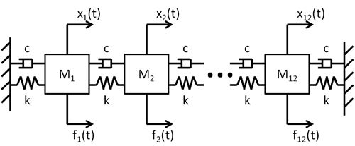
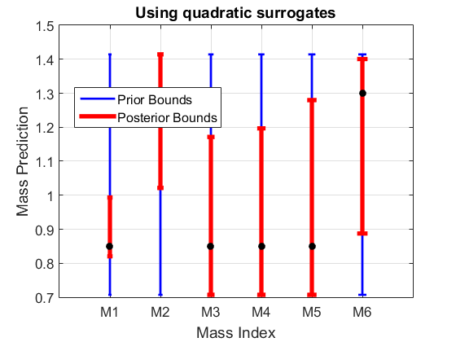
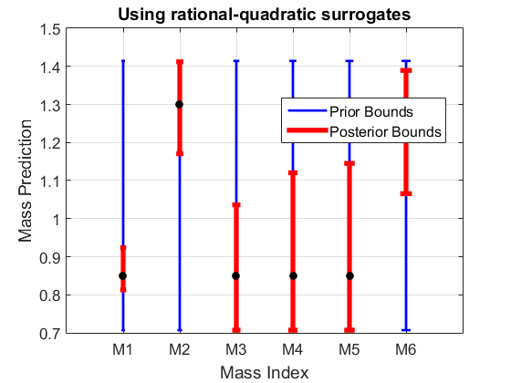

B2BDC Example: Mass detection from impedance magnitude measurements
In this example, we demonstrate a B2BDC analysis of an existing simulation code. Specifically, we use the B2BDC toolbox to analyze a series connection of 12 mass-spring-damper systems with identical stiffness and damping coefficents. The first 6 masses are uncertain and serve as the variables for the analysis.

The m-files MSD1D.m provides the computational model for the example. Additionally, the function getQOIonSamples.m evaluates the computational model and returns frequency response measurements for the velocity output x1_dot due to a sinusoidal input f_1(t) at 25 specified probing frequencies. These frequency response measurements serve as QOIs. Following the B2BDC methodology, we incorporate the variables, QOI models, and noisy QOI observations in a dataset and demonstrate a reduction in uncertainty of the 6 masses.
Contents
- Problem setup
- Insert uncertain masses and prior bounds into a VariableList object
- Create LatinHyperCube samples for training and validation data
- Define values of all known quantities
- Call computational model to evaluate QOIs on training data and validation data
- Construct quadratic surrogate models from training data
- Simulating data collection: specify true mass values and noisy QOI measurements
- Error analysis
- Using a B2BDC option file
- Constructing the dataset
- Predict range of each uncertain mass
- Plot predictions (and hidden true values)
- Create rational-quadratic surrogate model from training data
- Evaluate rational-quadratic surrogate error on validation data
- Error analysis
- Create a new dataset with rational-quadratic surrogates
- Predict range of each uncertain mass
- Plot predictions (and hidden true values)
- Attribution
format compact W = what('MassDetectionExample'); str = genpath(W.path); addpath(str);
Problem setup
nUncertainMass = 6; nFixedMass = 6; % number of fixed-value masses (further below) NQOI = 25; % number of probing frequencies wProbeVec = logspace(log10(0.1),log10(3),NQOI); NTrainSamples = 15*nUncertainMass^2; % 6 masses -> 540 samples NValidateSamples = round(NTrainSamples/2);
Insert uncertain masses and prior bounds into a VariableList object
The uncertain masses serve as the variables in this example. Prior knowledge tells us that each mass lies within the range [1/sqrt(2) sqrt(2)]. The function generateVar takes a numberOfVariables-by-1 cell array of variable names and an numberOfVariables-by-2 array containing the corresponding lower and upper bounds as inputs and returns a VariableList object.
varName = {'M1','M2','M3','M4','M5','M6'};
H = repmat([1/sqrt(2) sqrt(2)],[nUncertainMass,1]);
varList = generateVar(varName,H);
Create LatinHyperCube samples for training and validation data
The function makeLHSsample takes a specification on the number of samples and returns a numberOfSamples-by-numberOfVariables Latin hypercube design matrix. In this case, we are sampling the uncertain region of the 6 unkown masses. These samples will be used to train and validate the surrogate models for the QOIs.
xTrain = varList.makeLHSsample(NTrainSamples); xValidate = varList.makeLHSsample(NValidateSamples);
Define values of all known quantities
The 6 known masses all have a mass of 1. Similarly, the stiffness and damping coefficients are 1 and 0.2 respectively.
fixedMassValue = 1; fixedMassVec = repmat(fixedMassValue,[nFixedMass,1]); Kval = 1; Cval = 0.2;
Call computational model to evaluate QOIs on training data and validation data
The function getQOIonSamples.m is specific to this example. It takes a numberOfSamples-by-numberOfVariables design matrix and an 1-by-NQOI vector of probing frequencies as inputs (as well as some problem setup data) and returns a numberOfSamples-by-NQOI array. The (i,k)-th entry of the returned array corresponds to the frequency response of the system constructed from i-th mass sample at the k-th frequency.
yTrain = getQOIonSamples(xTrain, wProbeVec, nUncertainMass, fixedMassVec, Kval, Cval); yValidate = getQOIonSamples(xValidate, wProbeVec, nUncertainMass, fixedMassVec, Kval, Cval);
Construct quadratic surrogate models from training data
In this section, we construct 25 quadratic models representing the relationship between the variables (6 uncertain masses) and the 25 QOIs (frequency responses at 25 probing frequencies). Details regarding the generateModelbyFit function can be found in Model_by_Fitting_demo.m.
qSMQOI = []; qAbsErrMax = zeros(NQOI,1); for k = 1:NQOI qModel = generateModelbyFit(xTrain,yTrain(:,k),varList,'qinf'); qSMQOI = [qSMQOI ; qModel]; errValidate = yValidate(:,k) - qModel.eval(xValidate); qAbsErrMax(k) = max(errValidate); end
Simulating data collection: specify true mass values and noisy QOI measurements
In this section, we specify the true values of the uncertain masses. These are used to generate noisy observations for the B2BDC analysis. In a real world setting, these observations would come from experiments. Of course, the true mass values are hidden from the analysis and will be used for verification during the posterior analysis. The observation error of 5%, however, is a known quantity and a property of the measuring equipment.
Mtrue = [0.85; 1.3; 0.85; 0.85; 0.85; 1.3]; z = getQOIonSamples(Mtrue',wProbeVec,nUncertainMass, fixedMassVec, Kval,Cval); yTrue = abs(z(:)); measError = 0.05; yMeas = yTrue.*(1-2*measError*(rand(NQOI,1)-0.5));
Error analysis
Note, the fitting error of the second and third QOIs are quite large. In the code cell below, we compare the in-sample training error, which is stored in the Qmodel array qSMQOI, to the cross-validation error we have calculated above in qAbsErrMax.
%in-sample error qSMQOI(2).ErrorStats qSMQOI(3).ErrorStats %cross-validation error qAbsErrMax(2:3)
ans =
absMax: 14.1329
absAvg: 7.5011
relMax: 3.1884
relAvg: 0.6932
ans =
absMax: 10.2620
absAvg: 4.8643
relMax: 2.6357
relAvg: 0.6104
ans =
18.9033
25.1931
Using a B2BDC option file
Due to the large fitting errors for a few of the QOIs, it would be imprudent to trust the surrogate models completely. To compensate for this additional uncertainty, we can incorporate the fitting errors into the observation bounds when constructing the dataset units. If we wished to use the in-sample error, the following code would create an option file that automates that process: Opt = generateOpt('Display',false,'AddFitError',true);. We could then procede as usual and enter the measurement uncertainty / observation bounds without modification. In this case, however, the cross-validation error is significantly larger and we wish to manually include it into the dataset. Thus, we must ensure that the 'AddFitError' option is off.
Opt = generateOpt('Display',false,'AddFitError',false);
Constructing the dataset
Having defined our QOI models and observations, we can now construct a dataset. The observation upper and lower bounds include both the measurement error and the fitting error. See Dataset_demo.m for details on the generateDSunit and addDSunit commands.
dsName = 'Mass Detection Dataset: Quadratic'; dsQ = generateDataset(dsName); for k = 1: NQOI dsUnit_Name = ['At frequency w_' int2str(k)]; exp_LB = yMeas(k) - measError*abs(yMeas(k)) - qAbsErrMax(k); exp_UB = yMeas(k) + measError*abs(yMeas(k)) + qAbsErrMax(k); exp_Observe = yMeas(k); dsUnit = generateDSunit(dsUnit_Name,qSMQOI(k),[exp_LB,exp_UB],exp_Observe); dsQ.addDSunit(dsUnit); end
Predict range of each uncertain mass
For each mass, perform the posterior calculation. See the GRIMech_demo2.m demo for details.
predResultQ = dsQ.calVarBounds([1:nUncertainMass],Opt);
Plot predictions (and hidden true values)
The posterior bounds are plotted as red bars, the prior bounds are plotted as blue bars, and the truth is shown in black.
priorQ = [ [dsQ.Variables.Values.LowerBound]' [dsQ.Variables.Values.UpperBound]']; figure; plotBounds(priorQ,predResultQ, varName); plot(Mtrue,'ko','MarkerFaceColor','k'); xlabel('Mass Index'); ylabel('Mass Prediction'); title('Using quadratic surrogates');
Create rational-quadratic surrogate model from training data
Now, we rerun the entire procedure using rational-quadratic surrogates. Due to the long runtime (~1 hour), we are currently loading previously constructed surrogates. To generate your own rational-quadratic surrogates, change runRatQuadFit = false; to runRatQuadFit = true;.
runRatQuadFit = false; if runRatQuadFit rqSMQOI = []; rqAbsErrStd = zeros(NQOI,1); for k = 1:NQOI rqModel = generateModelbyFit(xTrain,yTrain(:,k),varList,'rq'); rqSMQOI = [rqSMQOI ; rqModel]; end save RatQuadModels rqSMQOI else load RatQuadModels end
Evaluate rational-quadratic surrogate error on validation data
This standard deviation will be used to add to the QOI bounds, effectively account for errors in the surrogate models
rqAbsErrMax = zeros(NQOI,1); for k = 1:NQOI errValidateRQ = yValidate(:,k) - rqSMQOI(k).eval(xValidate); rqAbsErrMax(k) = max(errValidateRQ); end
Error analysis
%in-sample error rqSMQOI(2).ErrorStats rqSMQOI(3).ErrorStats %cross-validation error rqAbsErrMax(2:3)
ans =
absMax: 7.1612
absAvg: 3.3841
relMax: 1.7283
relAvg: 0.3481
ans =
absMax: 6.2091
absAvg: 3.3355
relMax: 1.6451
relAvg: 0.4822
ans =
16.9771
27.6793
Create a new dataset with rational-quadratic surrogates
This process is identical to creating the previous dataset with quadratic surrogates.
dsName = 'Mass Detection Dataset: Rational Quadratic'; dsRQ = generateDataset(dsName); for k = 1: NQOI dsUnit_Name = ['At frequency w_' int2str(k)]; exp_LB = yMeas(k) - measError*abs(yMeas(k)) - rqAbsErrMax(k); exp_UB = yMeas(k) + measError*abs(yMeas(k)) + rqAbsErrMax(k); exp_Observe = yMeas(k); dsUnit = generateDSunit(dsUnit_Name,rqSMQOI(k),[exp_LB,exp_UB],exp_Observe); dsRQ.addDSunit(dsUnit); end
Predict range of each uncertain mass
As we have already incorporated the fitting error in the dataset, we must create an option file to turn the 'AddFitError' feature off before performing prediction.
Opt = generateOpt('Display',false,'AddFitError',false); predResultRQ = dsRQ.calVarBounds([1:nUncertainMass],Opt);
Plot predictions (and hidden true values)
The posterior bounds are plotted as red bars, the prior bounds are plotted as blue bars, and the truth is shown in black.
priorRQ= [ [dsRQ.Variables.Values.LowerBound]' [dsRQ.Variables.Values.UpperBound]']; figure; plotBounds(priorRQ,predResultRQ, varName); plot(Mtrue,'ko','MarkerFaceColor','k'); xlabel('Mass Index'); ylabel('Mass Prediction'); title('Using rational-quadratic surrogates');
Attribution
UC Berkeley, Spring 2016, B2BDC team